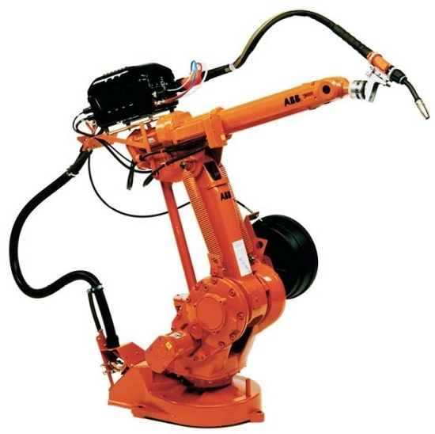
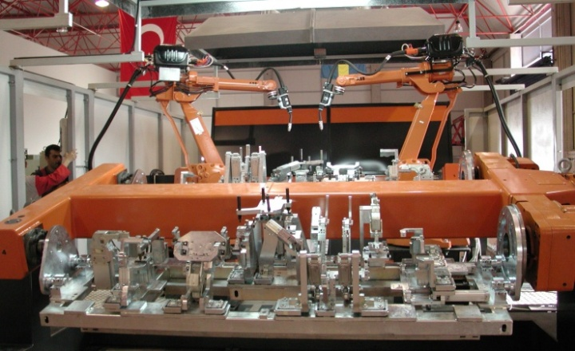
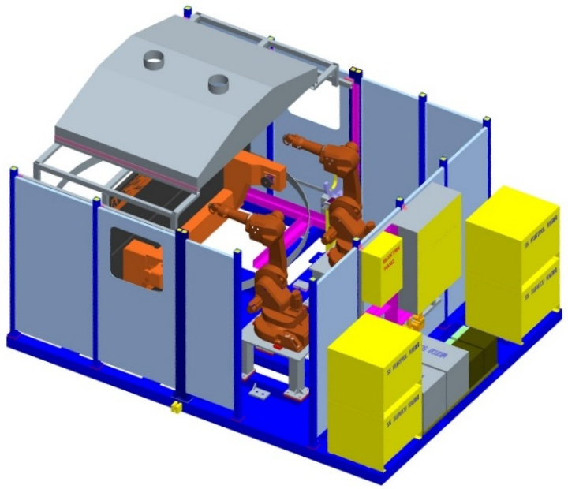
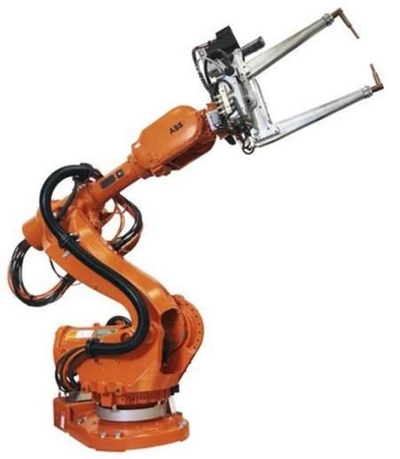

|
ROBOTLU KAYNAK OTOMASYONU
Bu yazýmýzda 6 eksenli Endüstriyel Robotlarýn kaynak, özelliklede gazaltý ve punta kaynaðýnda kullanýlmasýyla ilgili temel bilgiler vereceðiz.
6 eksenli endüstriyel robotlar ilk olarak 1975 yýlýnda öncelikle gazaltý, daha sonra da 1979 yýlýnda punta kaynaðýnda kullanýlmaya baþladýlar. O günden bu yana robotlu kaynak otomasyonu hýzla geliþmiþ olup dünya çapýnda yüzbinlerce robot, uygun çevre ekipmanlarýyla birlikte özellikle gazaltý ve punta kaynak prosesinde kullanýlmaktadýr.

ROBOTLU GAZALTI KAYNAÐI (MIG / MAG)
Gazaltý kaynaðý bilindiði gibi kaynak yöntemleri içinde mekanizayona / otomasyona uygunluðu ile göze çarpmaktadýr. Robotun geliþimiyle bu prosesin robotla gerçekleþtirilebileceði düþünülmüþ, robota uygun ekipmanlarýn yapýlabilmesiyle birlikte de uygulanmaya baþlamýþtýr. Robotlu kaynak sistemlerinin en önemli özelliði doðrudan kaynak kalitesi ve dolayýsýyla ürün kalitesinin artýþýdýr.
Robotlu kaynak sistemlerinde kullanýlan kaynak fikstürleri ise bu sistemlerin en önemli unsurlarýnýn baþýnda gelmektedir. Kaynak fikstürlerinin teknik özellikleri eðer istenilen koþullarý saðlamýyorsa, istenilen ürün kalitesi elde edilememekte ve hatta üretim durma noktasýna gelebilmektedir. Bazý kullanýcýlar özellikle satýn alma süreçlerinde sadece robot ve robot maliyetine odaklanmakta ve çok önemli olan fikstür ve diðer yan ekipmanlarýn gözardý edilmesi ciddi sorunlara davetiye çýkarmaktadýr.
Yüksek adetlerin ve ciddi kalite gerekliliklerinin söz konusu olduðu otomotiv sanayi bu geliþmeye çok çabuk tepki vermiþ olup kýsa sürede yüksek miktarlarda robot söz konusu sektörde kullanýlmaya baþlanmýþtýr. Þu anda da en büyük robot kullanýcýsý sektör otomotiv ve yan sanayileridir. Bununla birlikte beyaz eþya, genel makina ve metal sektörleride her geçen gün daha fazla sayýda robot kullanmaktadýr. Robot tabanlý gazaltý kaynak prosesinin kazandýrdýklarýný aþaðýda özetlemeye çalýþtýk.
- Ürün kalitesinin artýþý: Kaynaðýn yapýlmasý için gerekli torç hareketlerinin robot tarafýndan hep ayný kararlýlýk ve etkinlikle yapýlmasý sonucu kaynak kalitesindeki tartýþýlmaz artýþ,
- Azalan Ýmalat maliyetleri: Kaynak sürelerinde manuel / insanlý kaynaða göre 2 ile 5 kata kadar hýz artýþý ile düþen imalat süreleri ve azalan iþçilik maliyetleri,
- Verimlilik artýþý: Parça üretim sürelerinin kararlý ve önceden bilinebilir olmasýyla artan verim, ayný robot 3 vardiya hiç durmadan çalýþabilir
- Müþterinin ihtiyacýna göre tasarlanan sistemler: Ellle yapýlmasý çok zor olan kaynaklarýn tamamen müþterinin ihtiyacýna göre tasarlanan sistemlerle yapýlabilmesi,
- Çalýþma ortamýnýn iyileþtirilmesi: Operatörlerin kaynak gibi aðýr ve insan saðlýðý için riskler barýndýran bir prosesten uzaklaþtýrýlmasý.
MIG / MAG KAYNAÐINDA KULLANILAN ROBOT VE YAN EKÝPMANLAR

Gazaltý kaynaðý yapmak için kurulan Robotlu bir istasyonda/sistemde aþaðýdaki ekipmanlar bulunmaktadýr,
- Robot: Parçaya uygun eriþim ve taþýma kapasitesine sahip olmalýdýr,
- Robot Kontrolörü: Gazaltý kaynak prosesine uygun yazýlým yüklenmiþ olmalýdýr
- Güç Kaynaðý: Kaynak yapýlacak malzemeye uygun akým, gerilim özelliklerini saðlamalý, robot bilgisayarý ile entegre olmalýdýr
- Torç: Parçaya ve kaynak yapýlan malzemeye uygun olmalýdýr, su soðutmalý olmasý sarf malzemelerin ömrünü uzatmaktadýr
- Tel Sürücü: Kaynak telinin uygun hýz ve diðer koþullarda torca sürülmesini saðlar
- Hortum Paketi: Kaynak için gerekli tel, gaz ve enerjinin tel sürücüden alýnarak torca uygun bir þekilde iletilmesini saðlar
- Torç Servis Merkezi: Kaynak nedeniyle kirlenen torcun temizlenmesi ve torcun kalibrasyonu, aksi takdirde torcun kaynak curufu ile dolmasý nedeniyle kaynak yapýlamaz hale gelmektedir.
- Parça Fikstürleri: Robotlu kaynaða uygun ve teknik gereklilikleri saðlayan (rijidlik, ayarlanabilirlik) fisktürler robotlu kaynak sistemin en önemli parçasýdýr. Manuel veya otomasyonlu olabilir.
- Fikstürler için pozisyoner (Opsiyonel): Parçanýn kaynaklarý, parçanýn dönmesini gerektiriyorsa çoðunlukla fikstürler, yine robot tarafýndan kontrol edilen pozisyonerler ile döndürülmekte ayný zamanda parça akýþý saðlanarak robotun durmamasý saðlanmaktadýr.
- Güvenlik Ekipmanlarý: Çevre çitleri, ýþýk bariyerleri ve mekanik sviçlerden oluþan sistemdir. Robotun çalýþma sahasýndan insanlarý uzak tutmak için uygun þekilde robotlu sisteme entegre edilirler.
- Servo Kontrollü Hareketli Ray Sistemi: Robot eriþiminin artýrýlabilmesi için robotun üzerinde hareket edebildiði Robot Travel Track.
- Ayrýca Duman emiþ, istasyonun kolay taþýnabilmesi için tabanlar vs.

DÝRENÇ / PUNTA KAYNAÐI - SERVO TABANCA ÝLE GÜNDE 30 BÝN PUNTA
Punta kaynaðýnda kullanýlan ekipmanlarýn (punta tabancasý, hortum paketleri vs.) aðýrlýðý ve entegrasyon zorluklarý nedeniyle Robotlu Punta kaynaðý, gazaltýndan daha sonra uygulanmaya baþlanmýþtýr.
Gazaltý kaynaðýndan farklý olarak Robotlu Punta Kaynaðý daha çok otomotivde ve otomotiv yan sanayiinde ve beyaz eþya üretiminde yoðun olarak kullanýlmakta ve daha farklý robot ve çevre ekipmanlarý gerektirmektedir.
Endüstriyel robotlu punta istasyonlarý %100 kaynak kalitesi ve 0.1 mm hassasiyetle üründe en yüksek kaliteyi, çevrim zamanlarýnda %30'a varan indirimler ile gerçekleþtirebilmektedir. Günümüzde servo tabancalý bir robotla ülkemizdeki bir Otomotiv yan sanayi fimasýnda günlük 30000 adet puntaya ulaþmýþtýr.
Servo motorlu kaynak tabancalarý ise, punta noktasýnda kaynak esnasýnda oluþan basýncýn yol açtýðý deformasyonu ortadan kaldýrarak ürün kalitesi üzerinde ayrýca pozitif bir etki saðlamaktadýr. Servo tabanca sayesinde parça var yok kontrolü yapýlabilmekte, tabancanýn aðýz açýklýðý istenilen deðerlerde ayarlanarak çevrim süresinde iyileþtirme . Ayrýca her punta noktasý için baský kuvveti, akým þiddeti ve zamaný farklý deðerlere ayarlanabilmektedir.

PUNTA KAYNAÐINDA KULLANILAN ROBOT VE YAN EKÝPMANLAR
- Robot: Oldukça aðýr olan Servo Punta tabancasýný taþýma kapasitesine ve eriþime sahip olmalýdýr. (IRB 6600 ve benzeri)
- Robot Kontrolörü: Punta Kaynak prosesine uygun yazýlým yüklenmiþ olmalýdýr.
- Punta Robotu için Özel Hortum Paketi: Punta tabancasýnýn ihtiyaç duyduðu soðutma suyu, sinyal, enerji ve havanýn robotun üzerinden tabancaya iletilebilmesi için özel tasarlanmýþ olmalýdýr.
- Kaynak Kontrol Ünitesi: Kaynak akým ve çalýþma süresini ayarlamak için robot bilgisayarý ile tam entegre, genellikle AC gerilim tabanlý, tristör kumandalý Kaynak Kontrol Ünitesi (Weld Controller)
- Elektrod Bileyici: Punta Tabanca elektrodlarýnýn bilenmesi için kullanýlýr ve robot tarafýndan kontrol edilir.
- Parça Fikstürleri: Robotlu kaynaða uygun ve teknik gereklilikleri saðlayan (rijidlik, ayarlanabilirlik) fisktürler robotlu kaynak sistemin en önemli parçasýdýr. Manuel veya otomasyonlu olabilir.
- Fikstürler için pozisyoner (Opsiyonel): Parçanýn kaynaklarý, parçanýn dönmesini gerektiriyorsa çoðunlukla fikstürler yine robot sistemi tarafýndan kontrol edilen pozisyonerler ile döndürülmekte ayný zamanda parça akýþý saðlanarak robotun durmamasý saðlanmaktadýr. Her sistemde olmasý gerekmeyebilir.
- Güvenlik Ekipmanlarý: Çevre çitleri, ýþýk bariyerleri ve mekanik sviçlerden oluþan sistemdir. Robotun çalýþma sahasýndan insanlarý uzak tutmak için uygun þekilde robotlu sistem entegre edilirler,
- Servo Kontrollü Hareketli Ray Sistemi: Robot eriþiminin artýrýlabilmesi için robotun üzerinde hareket edebildiði Robot Travel Track.
ROBOTLU YAPILABÝLEN DÝÐER BAZI KAYNAK PROSESLERÝ
TIG KAYNAÐI: Çok ince ve özellikle beyaz eþya sektöründe kullanýlan paslanmaz saçlarýn kaynak robotuna uygun Tel Beslemeli ya da Tel beslemesiz TIG kaynaðý ekipmanýnýn entegrasyonu ile kaynatýlmasýdýr.
ALÜMÝNYUM KAYNAÐI: Alüminyumun özellikleri nedeniyle Aluminyum kaynaðýnda standart gazaltý ekipmanlarý kullanýlamamaktadýr. Sözkonusu kaynaðýn yapýlabilmesi için özel torç, tel surucu ve güç kaynaðýna ihtiyaç duyulmaktadýr.
SAPLAMA KAYNAÐI (Stud welding): Özellikle otomotiv parçalarýnýn saplama kaynaklarý robotla çok etkin bir þekilde yapýlabilmektedir.
|